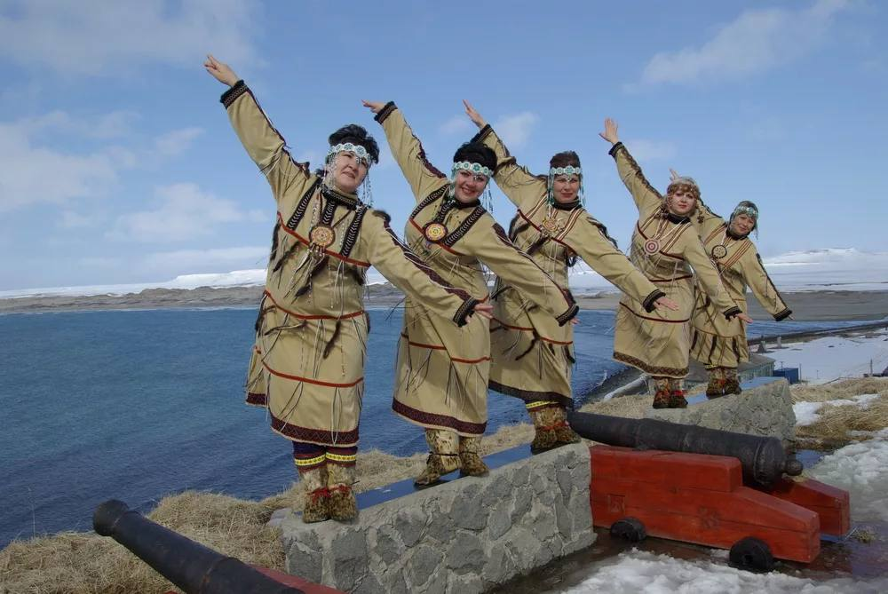
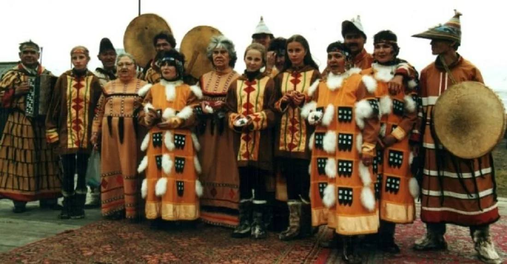

Традиции
| Главная | История | Язык | Культура | Традиции | Религия | Об авторе | Источники | |
|
 Текст 1
 Текст 2 |
Традиции алеутов включали особенности жилища, промысла, религии и семейные устои. Жилище Барабола — традиционное жилище алеутов, вместительная полуземлянка. Некоторые особенности: Строилась обычно на побережье, на возвышении, чтобы обеспечить хороший обзор. Стенки укрепляли китовыми костями и бревнами (как правило, это были выброшенные морем коряги). Крышу покрывали дёрном, сухой травой и шкурами. В крыше оставляли одно открытое отверстие, которое одновременно служило для входа и для освещения жилища. От входного отверстия вниз в полуземлянку спускалось бревно с вырубленными ступенями — с помощью этой лестницы алеуты могли попасть в жильё. Внутри барабора была разделена на несколько небольших помещений-камер: в некоторых из них представители семейства спали, в других — хранили оружие, домашнюю утварь и запасы продуктов. |